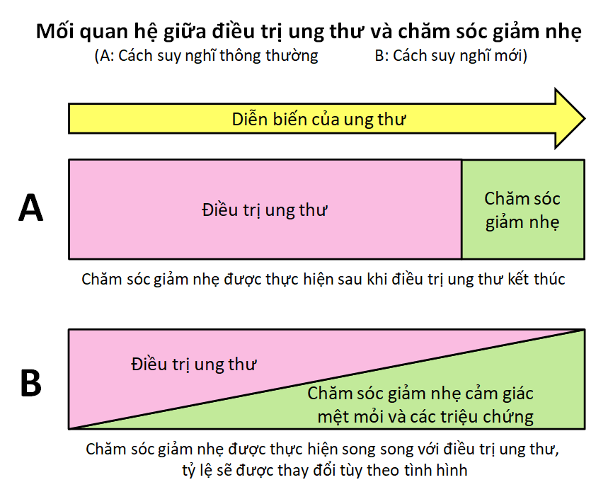
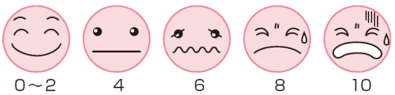

Theo NPO Japan Palliative Care, chăm sóc giảm nhẹ được coi như là một dịch vụ chăm sóc sức khỏe thể chất và tinh thần, nhằm nâng cao chất lượng cuộc sống của bệnh nhân mắc bệnh hiểm nghèo và gia đình người bệnh.
Nói một cách dễ hiểu, chăm sóc giảm nhẹ là việc làm dịu các cơn đau cả về thể xác lẫn tinh thần.
Bệnh nhân ung thư và gia đình của họ dễ cảm thấy mệt mỏi, căng thẳng trong nhiều trường hợp. Chẳng hạn như khi bị chẩn đoán mắc bệnh ung thư, trong quá trình điều trị, hoặc khi bị tái phát hay khi bị di căn…
Với mục đích để người bệnh và gia đình có thể tiếp tục sống như bình thường, chăm sóc giảm nhẹ cung cấp một loạt các hỗ trợ trong nhiều tình huống, không chỉ giới hạn ở khía cạnh y tế.
Theo Tổ chức y tế thế giới (WHO)- năm 2002, chăm sóc giảm nhẹ là cải thiện chất lượng cuộc sống (QOL) của người bệnh và gia đình người bệnh, những người đang đối mặt với những vấn đề liên quan tới ốm đau, đe dọa tính mạng, thông qua sự ngăn ngừa và làm giảm gánh nặng họ chịu đựng bằng cách nhận biết sớm, đánh giá toàn diện, điều trị đau, và các vấn đề khác như: thể lực, tâm lý xã hội, tinh thần.
Trong quá trình điều trị ung thư, các vấn đề về thể chất như các cơn đau, sự buồn nôn, chán ăn, khó thở, mệt mỏi… và các vấn đề về tinh thần như sự trầm cảm, cảm giác tuyệt vọng… có thể cản trở cuộc sống hàng ngày của bệnh nhân. Nhiều bệnh nhân gặp phải những vấn đề này ở các mức độ khác nhau trong quá trình điều trị ung thư.
Đối với việc làm dịu các triệu chứng bệnh, có những người suy nghĩ tiêu cực, họ cho rằng “đây không phải là điều trị ung thư”, hoặc “dù cho các triệu chứng có biến mất nhưng ung thư cũng không thể chữa khỏi”, hay là “đó chỉ là cảm giác”, vì vậy, họ không bàn bạc với ai mà chỉ giữ nó cho riêng mình.
Cách suy nghĩ về việc chữa trị ung thư từ trước đến nay đều hướng sự quan tâm vào việc “chữa trị bệnh ung thư", ngay cả các cơ quan, tổ chức y tế cũng chưa thể đáp ứng đầy đủ đến cảm giác đau khổ của bệnh nhân. Tuy nhiên, trong những năm gần đây, chất lượng cuộc sống của bệnh nhân trong quá trình điều trị đã được coi là quan trọng như việc điều trị ung thư.
Đối với những đau khổ mà người bệnh phải chịu về mặt thể chất, tinh thần, xã hội, tâm lý, coi trọng chính bản thân họ thay vì đối xử với người bệnh như một bệnh nhân ung thư; bằng cách đưa vào ngay từ sớm cách suy nghĩ chăm sóc giảm nhẹ bao gồm việc làm dịu sự khó chịu, tiến hành chăm sóc một cách tích cực, hỗ trợ cuộc sống xã hội của bệnh nhân và gia đình, chất lượng cuộc sống trong quá trình điều trị của bệnh nhân ung thư và người nhà có thể được cải thiện.
Hình 1:
Nhiều bệnh nhân và gia đình lầm tưởng rằng chăm sóc giảm nhẹ là dành cho bệnh nhân ung thư tiến triển và nghĩ rằng chưa đến lúc cần chăm sóc giảm nhẹ.
Nhưng thực ra chăm sóc giảm nhẹ nên được thực hiện ngay từ khi bị chẩn đoán ung thư chứ không phải đợi đến khi ung thư tiến triển mới thực hiện. (Hình 2, bảng 1)
Không chỉ giới hạn ở khía cạnh y tế, chăm sóc giảm nhẹ cung cấp một loạt các hỗ trợ với mục đích giảm bớt các triệu chứng thể chất như các cơn đau, sự buồn nôn, chán ăn, mệt mỏi và những đau khổ về mặt tinh thần như sự trầm cảm, cảm giác cô đơn để người tiếp nhận có thể tiếp tục cuộc sống của chính mình.
Ví dụ, khi bạn bị chẩn đoán mắc bệnh ung thư, bạn có thể bị trầm cảm nặng, bồn chồn hoặc không thể ngủ được. Thuốc chống ung thư và xạ trị có thể gây mất cảm giác ngon miệng và xảy ra tác dụng phụ như là buồn nôn.
Đau là triệu chứng có thể thấy ngay từ giai đoạn đầu của ung thư cũng như khi ung thư đã phát triển. Nếu các cơn đau không giảm thì việc điều trị ung thư sẽ gặp khó khăn và cuộc sống của người bệnh cũng chịu ảnh hưởng không hề nhỏ. Ngoài ra, trong thời kỳ ung thư phát triển, việc tiếp nhận sự chăm sóc và điều trị thích hợp đối với những cơn đau, sự buồn nôn, chán ăn, mệt mỏi, trầm cảm, cảm giác cô độc… sẽ giúp bảo vệ và duy trì cuộc sống của chính người bệnh.
Hình 2: Những sự thay đổi trong mối quan hệ giữa điều trị ung thư và chăm sóc giảm nhẹ
| Sự lo lắng và trầm cảm ngay sau khi chẩn đoán | Các chuyên gia chăm sóc tinh thần của nhóm chăm sóc giảm nhẹ sẽ làm việc với bác sĩ và y tá của bạn để hỗ trợ. |
| Những cơn đau trước khi điều trị | Bác sĩ hoặc y tá phụ trách làm việc cùng với đội chăm sóc giảm nhẹ để cung cấp những lời tư vấn, phương pháp điều trị phù hợp, và đưa ra cách điều trị cần thiết giúp giảm đau trước và sau quá trình điều trị ung thư. |
| Tác dụng phụ của xạ trị và thuốc chống ung thư (buồn nôn/ nôn mửa, chán ăn, tê, khô miệng, nhiệt miệng, tiêu chảy...) | Bác sĩ hoặc y tá phụ trách làm việc với bác sĩ khoa xạ trị, đội chăm sóc giảm nhẹ, nha sĩ... để đưa ra tư vấn, phương pháp điều trị. Chuyên gia dinh dưỡng sẽ đưa ra lời khuyên về những thực phẩm nên ăn và cách chế biến chúng. |
| Cơn đau sau phẫu thuật | Các bác sĩ và y tá, bác sĩ gây mê và nhóm chăm sóc giảm nhẹ làm việc cùng nhau để cung cấp phương pháp điều trị và tư vấn. |
| Cơn đau do tái phát hoặc di căn | Trong quá trình nhập viện, các bác sĩ, y tá, nhóm chăm sóc giảm nhẹ hoặc bác sĩ phụ trách khoa chăm sóc giảm nhẹ, chuyên gia dinh dưỡng... làm việc cùng nhau và đưa ra phương pháp điều trị. Trong quá trình điều trị tại nhà, bác sĩ phụ trách sẽ cung cấp phương pháp điều trị hoặc cách chăm sóc cùng với y tá đến tận nhà thăm khám. Ngoài ra, cũng có thể cung cấp lời khuyên, cách điều trị từ quan điểm của một chuyên gia chăm sóc tâm lý trong nhóm chăm sóc giảm nhẹ. |
| Sự khó thở | |
| Sự mệt mỏi, cảm giác suy nhược | |
| Chán ăn, buồn nôn/ nôn mửa | |
| Phù bạch huyết | |
| Vấn đề về chi phí điều trị | Các bác sĩ, y tá, nhân viên xã hội và các thành viên của nhóm chăm sóc giảm nhẹ sẽ cố gắng hỗ trợ bệnh nhân trong quá trình nằm viện. Đối với bệnh nhân điều trị tại nhà, bác sĩ phụ trách việc thăm khám tại nhà, y tá thăm khám sẽ hỗ trợ người bệnh. |
| Lo lắng về việc chuyển viện hoặc điều trị tại nhà | |
| Phiền não về sự tồn tại của bản thân và ý nghĩa của cuộc sống | Trong khi nằm viện, bác sĩ, y tá và chuyên gia tâm thần sẽ hỗ trợ bệnh nhân. Đối với chăm sóc tại nhà, bác sĩ và y tá phụ trách sẽ hỗ trợ người bệnh. | >
| Sự trầm cảm và lo lắng | |
| Vấn đề tinh thần và tâm trạng của gia đình bệnh nhân |
Bảng 1: Chăm sóc giảm nhẹ trong quá trình điều trị ung thư
Hầu hết những cơn đau của cơ thể do ung thư gây ra có thể được chữa khỏi bằng cách sử dụng thuốc giảm đau đúng cách. Lượng cần thiết để giảm đau phụ thuộc vào nguyên nhân gây ra cơn đau, mức độ, và phản ứng của mỗi cá nhân đối với thuốc giảm đau. Do đó, đối với mỗi bệnh nhân, cần tiến hành vừa hỏi thăm người bệnh về tác dụng của thuốc giảm đau vừa điều chỉnh liều lượng cho phù hợp. Điều quan trọng là cần tham khảo càng sớm càng tốt để có thể nhận được việc điều trị đầy đủ.
Hiện nay, phương pháp WHO, là phương pháp thường được sử dụng trong điều trị giảm đau do ung thư, được coi là phương pháp điều trị an toàn và hiệu quả nhất trên thế giới. Phương pháp này sử dụng thuốc giảm đau theo cấp độ phụ thuộc vào cường độ của cơn đau. Đối với những cơn đau quá nặng, thuốc giảm đau gây nghiện dùng trong y tế như morphin sẽ được sử dụng.
Bạn có thể có ấn tượng sai lệch đối với những thuốc giảm đau gây nghiện như morphin... rằng chúng là "thuốc phiện", "rút ngắn sinh mệnh", "phương pháp cuối cùng". Tuy nhiên, hơn 20 năm kinh nghiệm trên thế giới cho thấy rằng, các chất giảm đau gây nghiện như morphin có hiệu quả trong việc điều trị giảm đau do ung thư, và các tác dụng phụ mà mọi người vẫn lầm tưởng sẽ khó có thể xảy ra nếu nó được sử dụng đúng theo chỉ thị của bác sĩ.
Tác dụng phụ thường gặp của thuốc giảm đau gây nghiện là buồn nôn/ nôn, buồn ngủ, táo bón... Nhiều tác dụng phụ có thể phòng ngừa và chữa trị, vì vậy, người bệnh có thể yên tâm tiếp nhận việc điều trị giảm đau bằng phương pháp này.
Việc chịu đựng cơn đau trong một thời gian dài có thể gây ra ảnh hưởng lớn đến cuộc sống của người bệnh, chẳng hạn như là không thể ngủ vào ban đêm, mất cảm giác ngon miệng, bị hạn chế vận động, dễ có khuynh hướng chán nản... Hầu hết các cơn đau do ung thư có thể được giảm đau trong một khoảng thời gian ngắn nếu việc điều trị được bắt đầu ngay từ khi chúng còn ở mức độ nhẹ.
Để bắt đầu điều trị cơn đau ngay từ giai đoạn đầu, điều quan trọng là người bệnh phải thông báo đầy đủ cho bác sĩ về các triệu chứng đau của mình.
Chỉ có bệnh nhân có thể biết trạng thái thực sự của các cơn đau, vì vậy, điều quan trọng là diễn tả cơn đau một cách cụ thể như thế nào. Bằng cách trả lời các câu hỏi như "Đau từ bao giờ?", "Đau ở đâu?", "Khi nào thì đau?", "Đau như thế nào?", "Mức độ đau?", bác sĩ có thể hiểu được tình trạng đau của người bệnh. Người bệnh có thể tham khảo bảng 2, lập những ghi chú về thông tin tình trạng bệnh và đưa cho bác sĩ hoặc y tá xem.
Ngoài ra, nếu có thể nói rõ cơn đau ảnh hưởng đến cuộc sống hàng ngày của bạn như thế nào thì mục tiêu chữa trị sẽ rõ ràng hơn. Ví dụ, sẽ tốt hơn nếu nói đến những sự kiện dễ hiểu như là cơn đau làm bạn không thể ngủ, nhưng sau khi chữa trị thì bạn đã có thể ngủ...
| Thời điểm | Đau cả ngày, khi nào đau, hay đôi khi đột nhiên bị đau… |
| Vị trí | Đau ở đâu, một chỗ hay một khu vực rộng, luôn đau cùng một nơi… |
| Cảm giác thế nào | Đau nhói hay âm ỉ, cảm thấy tê, ngứa, đau thắt… |
| Ảnh hưởng đến cuộc sống hàng ngày | Mệt mỏi khi ở trong phòng tắm hoặc nhà vệ sinh, không thể ngủ, không thể ăn, không thể vận động, mệt mỏi ngay cả khi ngồi, không thể làm bất cứ điều gì… |
| Mức độ đau | Nếu mức độ đau nhất là 10 và khi không đau là 0, thì cơn đau lần này là khoảng bao nhiêu?... Một ví dụ về việc thể hiện nỗi đau bằng khuôn mặt: Việc ghi lại sự biến đổi của cơn đau rất có ích cho quá trình điều trị  |
| Tác dụng giảm đau | "Mất tác dụng giữa chừng", "Đã bớt đau một chút", "Hầu như không có hiệu quả"... |
Bảng 2: Những điều quan trọng khi truyền đạt tình trạng cơn đau
Bác sĩ sẽ vừa kiểm tra tình trạng đau của bệnh nhân vừa đưa ra nhiều cách giảm đau khác nhau, thậm chí có thể kết hợp nhiều phương pháp. Dưới đây là những ví dụ cụ thể.
♦ Sử dụng thuốc giảm đau
• Sử dụng thuốc giảm đau phổ biến như Aspirin, Acetaminophen...
• Sử dụng thuốc giảm đau gây nghiện dùng trong y tế (Morphin, Oxycodone, Fentanyl...).
(Ngoài thuốc uống còn có thuốc tiêm, thuốc đặt, thuốc dán... nên dù không thể uống thuốc cũng không sao.)
♦ Phong bế thần kinh
• Làm giảm cảm giác đau bằng cách tiêm một mũi làm tê liệt vào dây thần kinh gây đau. (phải được thực hiện tại cơ sở chuyên khoa)
♦ Xạ trị và phẫu thuật bơm xi măng tạo hình thân đốt sống qua da
• Ung thư di căn, ví dụ di căn đến xương, có thể gây đau dữ dội, khi đó, để hạn chế cơn đau có thể dùng xạ trị hoặc dùng phương pháp phẫu thuật bơm xi măng tạo hình thân đốt sống qua da...
♦ Điều trị cứng cơ
• Nếu các cơ xung quanh khu vực đau bị cứng thì có thể có cảm giác đau hơn, vì vậy, để giảm bớt cảm giác cứng cơ, có thể dùng cách xoa bóp, châm cứu, giác hơi...
♦ Giảm sự lo lắng
• Ngoài bác sĩ chăm sóc giảm nhẹ, bác sĩ khoa tâm lý và khoa tâm thần, bệnh nhân có thể nhận sự tư vấn từ nhà tâm lý học, y tá hay nhân viên xã hội...
• Sử dụng thuốc chống trầm cảm, lo âu...
♦ Kết hợp các phương pháp khác với thuốc
• Làm ấm và xoa bóp khu vực đau, hoặc những cuộc trò chuyện vui vẻ, những nơi thoải mái, nghe những bản nhạc yêu thích... Kết hợp tốt những phương pháp này với thuốc giảm đau cũng góp phần làm giảm các cơn đau.
Nguồn